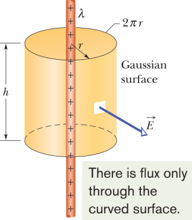

Gauss's Law
It is possible to derive a theorem about the electric field from a collection of charges, known as Gauss's law but we will not derive it from Coulomb's law
The net electric flux through any closed surface (known as Gaussian Surface) is proportional to the net charge inside the closed surface. The electric flux ΦE is defined as a surface integral of the electric field:
Mathematically, Gauss’s law is expressed as ΦE = Q/ε0.
To prove Gauss's law we need the concept of solid angle. We shall prove that, the solid angle subtended by any closed surface is 4π steradians.
The solid angle ∆Ω subtended by ∆A1 = ∆A1r̂ at the center of the sphere is defined as
∆Ω ≡ ∆A1/r12
Solid angles are dimensionless quantities measured in steradians (sr). Since the surface area of the sphere S1 is 4πr12, the total solid angle subtended by the sphere is
Ω ≡ 4πr12/r12 = 4π
In Figure 1, the area element ∆A2 makes an angle θ with the radial unit vector r̂, then the solid angle subtended by ∆A2 is
∆Ω ≡ ∆A2 ⋅ r̂/r22 = ∆A2 cos θ/r22 = ∆An/r22
where ∆A2n = ∆A2 cos θ is the area of the radial projection of ∆A2 onto a second sphere S2 of radius r2, concentric with S1.
As shown in Figure 1, the solid angle subtended is the same for both ∆A1 and ∆A2n:
∆Ω ≡ ∆A1/r12 = ∆A2 cos θ/r22
If we consider a generic surface not necesseraly spherical, the solid angle dΩ subtended by the surface differential dA being an infinitesimal surface element will approach the plane spherical surface, and the solid angle subtended by the arbitrary closed surface would be 4π steradians. Gaussian surfaces are usually carefully chosen to exploit symmetries to simplify the calculation of the surface integral e.g we can find a Gaussian surface S over which the electric field has constant magnitude. Furthermore, if E is parallel to n̂ everywhere on the surface, then E ⋅ n̂ = E. (If E and n̂ are antiparallel everywhere on the surface, E⋅ n̂ = −E.) Gauss ’s law then simplifies to
Appllications of Gauss's Law
While Gauss's law is always true, is not always useful. It is helpful only in cases where E is constant over the entire surface of integration, or when the surface can be divided into smalelr surfaces, on each of which En can be arguet to be constant or zero.
The first example is a point charge in empty space,. Since such a charge has no preferred orientation (it is a point), and sicne there is nothing else around to specify a preferred direction in space, the electric field must point radially toward or away from the charge and must depend only on the distance from the charge. Therefore, if the surfa of integration is a sphere centered on the charge, En is the same everywhere on the sphere.
φ = ∮E ⋅ dS = 4πr2E = q/ε0
or
Gauss's law implies Coulomb's law for the case of a point charge.
Field of an infinite line charge
Next consider a problem with cylyndrical symmetry rather than spherical symmetry. An example is an infinitely long line of charge. Consider a uniformly charged hollow cylinder of radius R.
In this case, charge is uniformly distributed over cylynder surface. Let λ be the charge per unit lenght. P is a point at distance r (> R) from the axis of the cylinder. Draw a coaxial cylyndrical Gaussian surface of radium r and lenght l. The electric flux due to the top and bottom circular caps is zero. The surface area of the cylinder is its circumference (2πr) times its lenght (l). The electric flux due to curved surface
∮E ⋅ dS = E (2πrl)
The net charge enclosed by the Gaussian surface q = λl, then by Gauss's law
E = λ/2πε0r
The direction of E is radially outwards. E is independent of the radius R of the charged cylinder. Notice that if we let σ be the surface density of charge on the cylinder then, σ = λ/2πRσ, that is
E = σ/ε0
If we costruct a Gaussian surface inside the hollow cylinder, it will enclode no charge. Therefore, the electric field inside a charged cylinder is zero.
Relativistic consistency of Gauss's Law
Coulomb's law is not consistent with the theory of special relativity. This incompleteness just reflects the underlying assumption of an action-at-a-distance force, which implies an infinite speed of signal transmission, incompatible with the basic postulate of relativity, according to which any interaction should be retarded (relativistic retardation). Unless charges are motioneless or moving very slowly compared to the speed of light, there is a flaw at some location by using Coulomb's law. The information about the change of the position of one of the particles should propagate at most with the velocity of light to the other particles. The electric field depends on where fast-moving particles were at some time in the past, not where they are now. Gauss's law, however, is consistent and we shall soon see why.
One way to avoid the problem with retardation would be to come up with some physical law that would relate a property of the electric field at some location and time (x, y, z, t) to source charges at the same location and time (x, y, z, t). If we could find a law in this form, relating source and fields at the same location and time, retardation wouldn't be a problem anymore and our law would be consistent with special relativity.
We know that the net flux on the surface of the